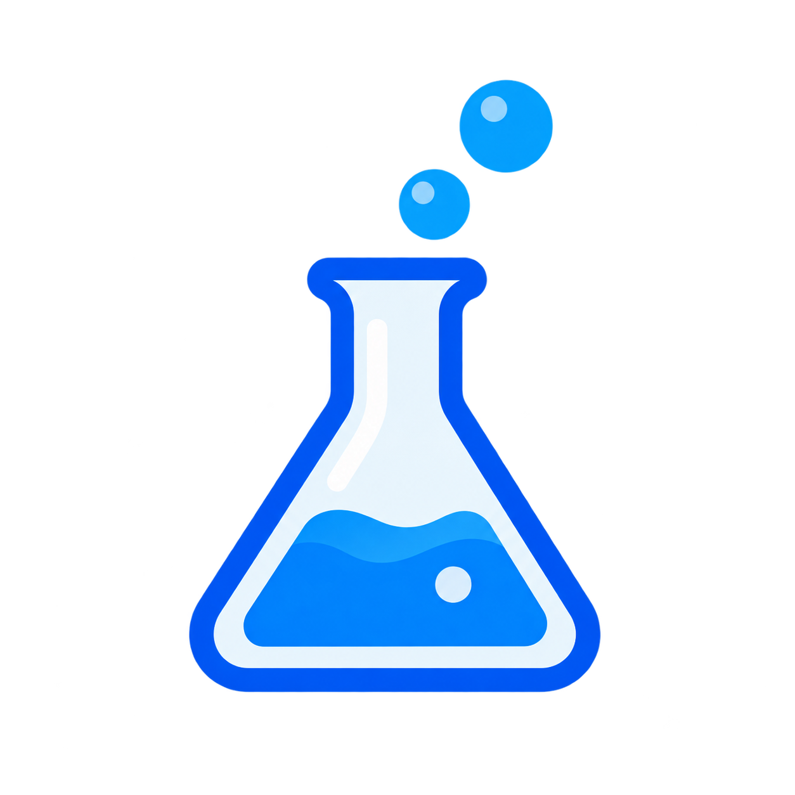

Documentar
Registrar problemas, soluciones, imágenes, categorías, laboratorios y etiquetas.

Lab NotesUna plataforma web colaborativa para documentar problemas, soluciones y conocimiento técnico de laboratorios de cómputo, con una evolución planeada desde una base de conocimiento compartida hasta una plataforma de soporte institucional.
Registrar problemas, soluciones, imágenes, categorías, laboratorios y etiquetas.
Comentarios, votos y una evolución hacia soluciones comunitarias validadas.
Búsqueda, filtros, perfiles, favoritos y estados para reutilizar el conocimiento.
Azure, SQL Server y una ruta hacia equipos, QR, PWA y soporte institucional.
Night Shift es el primer gran upgrade funcional posterior a Foundation. La pre-release actual es v1.1.0-alpha.1.
Una función se considera completada únicamente cuando está integrada, probada y versionada.
El roadmap público resume la evolución planeada de LabNotes. Night Shift muestra además el progreso real de su implementación.
El código fuente permanece privado, pero la aplicación está desplegada mediante Azure App Service.